(X-posted on the CyberCat Institute blog)
Suppose we have some category , whose morphisms are some kind of processes or systems that we care about. We would like to be able to talk about contexts (or environments) in which these processes or systems can be located.
This post is to finally write part of the lore of categorical cybernetics that I’ve been working out on the backburner for a few years, and I’ve talked about in front of various audiences a few times. I never thought it was quite compelling enough to write a paper about it, but it’s been part of my bag of tricks for a while, for example playing a central role in my lecture series on compositional game theory. In the meantime, similar ideas have been invented a few times in applied category theory, most notably being taken further for talking about quantum supermaps.
Contexts in a category
Topologically, we draw morphisms of our category as nodes, which have a hole outside but no hole inside (that is to say they are really point-like, despite how we conventionally draw them) - and dually, we draw contexts as diagram elements that have a hole inside but no hole outside.
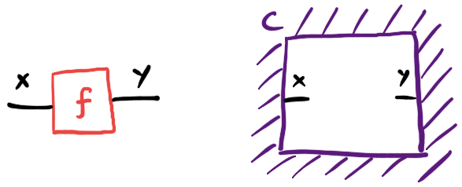
Being good category theorists, we choose not to say what a context is but how it transforms, which will lead to being able to define them via additional structure we can equip our categories with. If we have a context for morphisms , and we have morphisms and , we should be able to demote these morphisms into being part of an extended environment for morphisms :
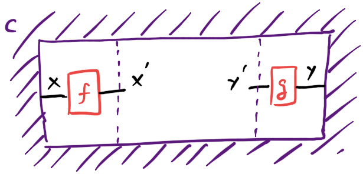
By asking that demoting twice gives the same result as demoting a composite, and the order of demoting on the domain and codomain doesn’t matter, we end up inventing the following definition: A system of contexts for a category is a functor , and a context for morphisms is an element of .
Things get much more interesting when is not just a category but a symmetric monoidal category, as is virtually always the case in any applied domain. Our first guess might be to replace the functor with some kind of monoidal functor. Lax monoidal (for the cartesian monoidal product on ) turns out to be probably what we want - this says that if we have a context for morphisms and one for morphisms we can compose them to get a context for morphisms , but this operation is not necessarily reversible. Topologically this is a bit subtle, and says we can bridge 2 holes with a single morphism:

We probably get away with this because we are assuming everything is symmetric monoidal. I sometimes think of holes as anti-nodes that we can slide around as though they are nodes. This part of the definition has an odd status right now: it seems that we can virtually always get it in practice, and it plays a role in the theory, but I have never actually deployed the lax monoidal structure of contexts while doing any applied work.
In any case, this is not enough to describe contexts in a symmetric monoidal category, so we need to go back to first principles.
The yoga of contexts
Suppose we have a symmetric monoidal category and we have a context for morphisms , and suppose we have a morphism . Similarly to before, we should be able to demote into the context, obtaining a context for morphisms :
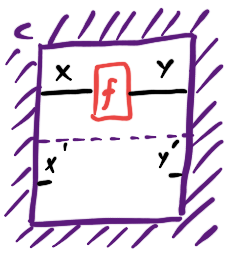
I wrote this definition in section 9 of The Game Semantics of Game Theory. But it turns out this isn’t the best way to write it: it’s enough to be able to demote an identity morphism, with an operation :
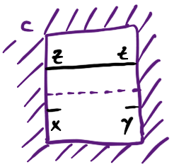
A category theorist would call this a (monoidal) costrength for , although I find it useful to think of it as a kind of tensor contraction.
But there’s another way to think about this whole thing. Given a symmetric monoidal category , a comb in is a diagram element with 1 hole on the inside and 1 hole on the outside:
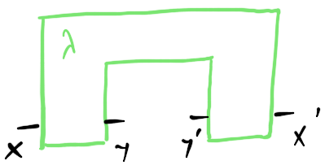
(Note, drawing them with this “comb†shape is enough because our ambient category is symmetric. In a planar setting, we would actually have to puncture a box with a hole.)
Concretely, a comb consists of a pair of morphisms coupled through a “residual†wire - but by drawing a box around it, we lose the ability to distinguish combs that differ by sliding a morphism between the front and back along the residual wire:
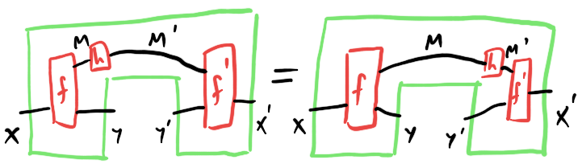
This turns out to be exactly the the definition of an optic in - I think of combs as one syntactic presentation (among several others) of the semantic concept of an optic in a category. There is a category whose objects are pairs of objects of , and whose morphisms are combs. Whereas string diagrams in compose left-to-right, these “comb diagrams†in compose outside-in, like an operad:
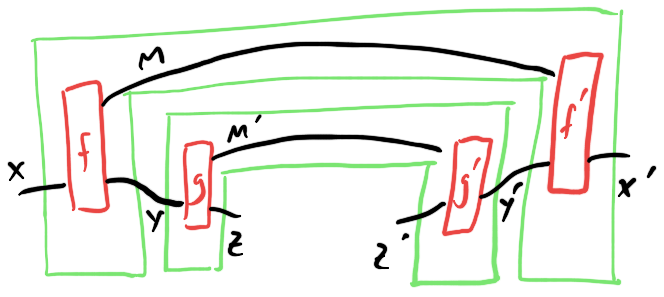
We also get a symmetric monoidal product on that encompasses what I said earlier about sliding holes around. Now we get an alternative definition of context: it’s a generalised state of optics. That is to say, it’s an ultimate outside, which can be transformed by attaching a comb to the inside of the hole:
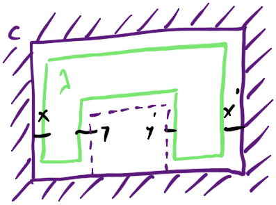
If we do this, the properties we had to demand of the co-strength map get absorbed into the quotient defining optics.
What is a “generalised state� A state in a monoidal category is a morphism from the monoidal unit, and a generalised state is something that transforms like a state: an element of some lax monoidal functor . That is to say: if we have a generalised state of and a morphism , we get a pushforward state ; and if we have generalised states of and of , we get a state of .
So now we have 2 different definitions of a system of contexts: as a lax monoidal functor equipped with a co-strength map, or as a lax monoidal functor . Fortunately, these definitions turn out to be equivalent: it’s a dual of the profunctor representation theorem. The normal version of this theorem says that Tambara modules - endo-profunctors on equipped with a strength map - are equivalent to functors . It turns out that a Tambara module on is the same thing as a Tambara module, which conveniently frees up the name Tambara co-module to be used for this thing.
(A word of warning: the paper I linked defines Ҡto be , which means they say when they mean and vice versa.)
As a personal anecdote, at different points I’ve convinced myself that both of these definitions were the correct definition of “system of contexts”, before realising that they were equivalent by the profunctor representation theorem - this led to me getting some quite good, graphical intuition for this otherwise notoriously abstract theorem.
Some time after working out the last part of this, I learned about the existence of this paper by Hermida and Tennent, which finally backed up my intuition behind my definition of generalised states by formulating a universal construction forcing them to become actual states. Incredibly this construction itself also falls squarely in the small cluster of methods we call categorical cybernetics, which caps off the whole thing very nicely. I touched on this construction in this blog post, and perhaps I’ll have more to say about it later too.
Conclusion
Often we don’t need generalised states, and ordinary states are enough: that’s when we take the representable functor , which is indeed lax monoidal. (General representable functors on a monoidal category are not lax monoidal in general!)
This leads to what I call the “representable system of contexts†for a symmetric monoidal category : it’s the one described by , where the monoidal unit of is . What this ends up saying is that a context for morphisms in is an equivalence class of pairs of a state and a costate in , coupled through a residual:
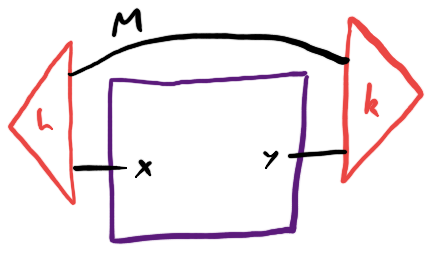
This turns out (in a non-trivial way) to be equivalent to the definition of context used for both deterministic and Bayesian open games. In those cases, is itself a category of optics, making systems of contexts examples of double optics. Iterating the construction can be usefully depicted in 2 different ways: as 1-hole combs in a bidirectional category:
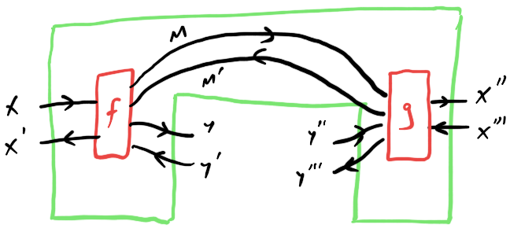
or as 3-hole combs:
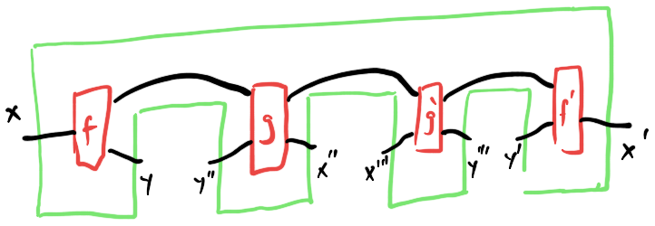
Moving back and forth between these equivalent views of the iterated optic construction is a key part of the yoga of contexts as it applies to categorical cybernetics.
An example of a non-representable system of contexts is the “iteration functor†I talked about in this post. It’s closely related to the algebra of Moore machines which plays a major role in David Jaz Myers’ book on categorical systems theory.
But, the actual reason this is a blog post and not a paper is that I don’t have any really compelling examples outside of categorical cybernetics. But I’ll talk more about my struggles with that in part II, where I’ll build a category of “behaviours in context†given a system of contexts, generalising the construction of open games.